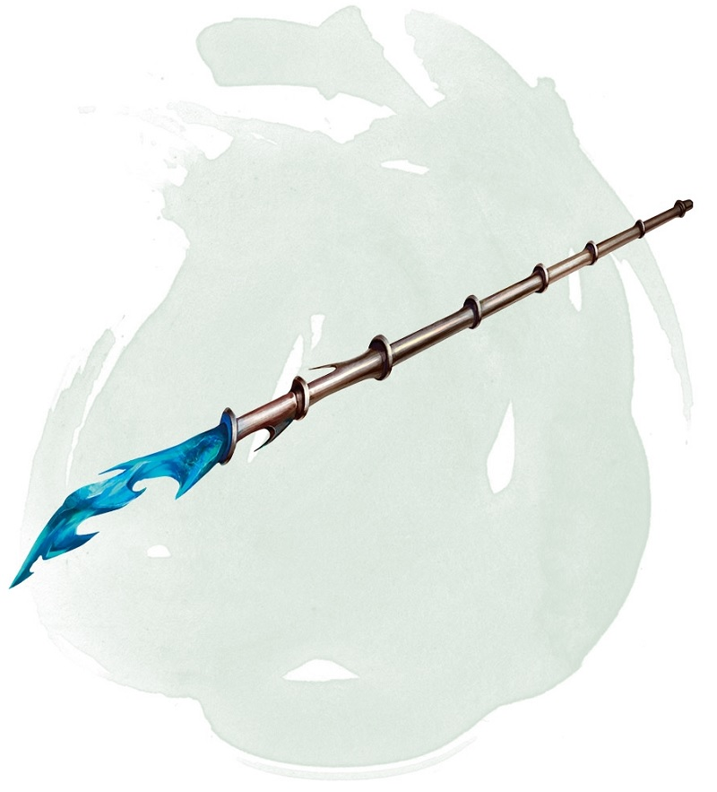

Baguette de projectiles magiques
Baguette, peu commun
Cette baguette possède 7 charges. Tant que vous la tenez, vous pouvez utiliser une action pour dépenser de 1 ou plus de ses charges pour lancer le sort projectile magique depuis la baguette. Pour 1 charge, vous lancez le sort comme si vous utilisiez un emplacement de sort de niveau 1, et vous augmentez le niveau d'emplacement de sort de un pour chaque charge additionnelle dépensée.
La baguette récupère 1d6 + 1 charges dépensées chaque jour à l'aube. Lorsque vous dépensez la dernière charge, lancez un d20. Sur un 1, la baguette tombe en cendre et est détruite.
La baguette récupère 1d6 + 1 charges dépensées chaque jour à l'aube. Lorsque vous dépensez la dernière charge, lancez un d20. Sur un 1, la baguette tombe en cendre et est détruite.
Dungeon Master´s Guide (SRD)
